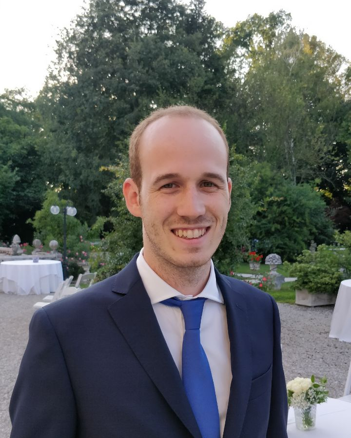

Francesco Cazzaro
PhD in Natural Language Processing
News: I have just successfully defended my PhD!
One of my main interests is Text-To-Query Semantic Parsing, with a particular focus on Knowledge Graphs. My goal is to develop fully practical and reliable systems that can be used to access and interact with data without requiring technical expertise. Besides this, my interests include Structured Prediction, Generalization and Semantic Understanding. I also love tinkering with small locally deployable LLMs.
I did my PhD as a part of the INTERACT project funded by the European Research Council (ERC). I conducted research in Natural Language Processing under the supervision of Ariadna Quattoni and the co-supervision of Xavier Carreras. Previously I obtained a master in Computer Engineering at the Università degli Studi di Padova with thesis advisor Giorgio Satta. If you want to contact me, feel free to send me an email.